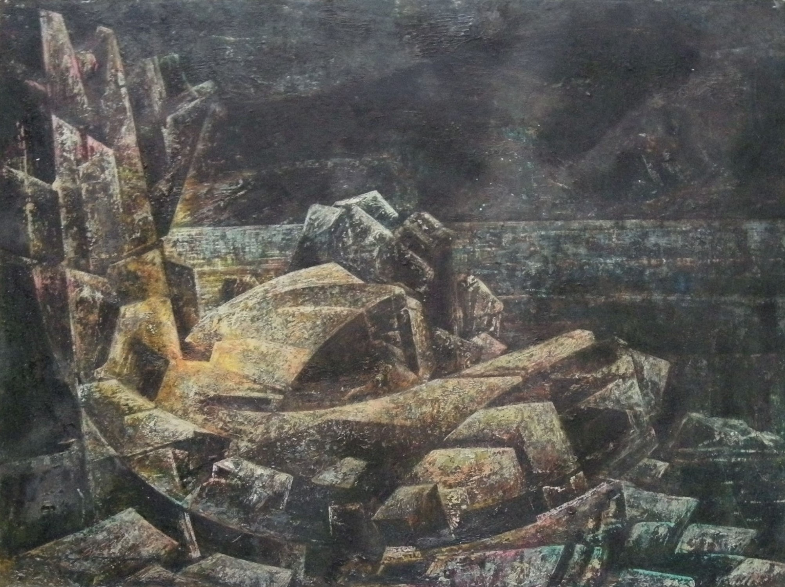

Lena George
c.1890 – c.1980
Artist Biography
Lena George was born Annie Selena Buckley and studied art at the Royal College of Art in London. She changed her name when she married the architect Walter Sykes George. Before the First World War George accompanied her husband when he was working on an archaeological site in Meroe, Sudan and her paintings of the site were shown at the Society of Antiquaries in 1913. The following year she showed two works at Liverpool’s Walker Art Gallery and she exhibited on five occasions at the Royal Academy from 1913 to 1925. Several paintings were also included at an exhibition at the Royal Institute of British Architects (RIBA) of ‘Old Students’ Works of the Royal College of Art’ in 1923. George’s work was largely orientalist and focused on buildings but she also painted western landscapes and the like. In 1915 the couple moved to India and they stayed there until 1962 when Walter Sykes George, who had carved out a career as an architect working in the style of Lutyens, died. There is little evidence of Lena George painting during the latter part of this period but when she returned to England, living in Ivybridge, Devon and then Milborne, Port Dorset, she took up art again and produced some very accomplished modernist paintings. She died in her 90s.

Lamorna